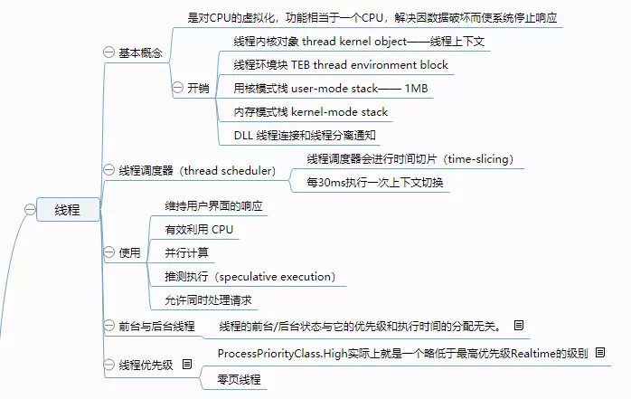

原文出处:本文由博客园博主米莱Milai提供。
原文连接:https://www.cnblogs.com/weilai1917/p/11809359.html
原文连接:https://www.cnblogs.com/weilai1917/p/11809359.html
线程，一个再熟悉不过的名词了。打下它是决定能掌握变成编程基础命脉，能够开发出性能更优的程序。
总体概览

线程基础
计算机早期，操作系统都没有线程的概念，整个系统只运行着一个执行线程，同时包含操作系统代码和应用程序代码。所以就存在一个问题，长时间运行的任务会阻止其他任务执行。例如：在16位Windows的那些日子，打印文档会“冻结“整台机器。
随后微软为了解决这部分问题，引入进程概念。但是CPU本身呢，应用程序发生死循环呢？所以线程应运而生，它是对CPU的虚拟化，为每个进程提供进程专用的线程。
开销
- 线程内核对象 （thread kernel object），包含线程上下文，上下文中保存CPU寄存器集合的内存块，在x64位系统中占1240字节
- 线程环境块 （thread environment block TEB），耗用一个内存页4KB。
- 用户模式栈 （user-mode stack），系统保留1MB的地址空间。
- 内核模式栈 （kernel-mode stack），针对从用户模式的代码传递给内核的任何实参。x64 占用 24KB。
- DLL 线程连接（attach）和 线程分离（detach）通知。
线程上下文切换
- 将CPU寄存器的值保存在当前正在运行的线程内核对象内部的一个上下文结构中。
- 从现有线程集合中选出一个线程供调度。如果该线程由另一个线程拥有，系统在开始执行任何代码或者接触任何数据之前，还必须切换CPU看见的虚拟地址空间。
- 将所选上下文结构中的值加载到CPU的寄存器中。
上下文切换大约耗时 30ms，一个时间片结束后，如果系统决定再次调用同一个线程，系统不会执行上下文切换。所以，你懂的，要尽量避免切换，4核最理想是4个线程同步执行。
初衷
微软在设计OS的时候，决定侧重于可靠性与相应能力，而非侧重于速度和性能。
使用线程理由
- 可响应性
- 性能
- 计算限制的异步操作
- I/O限制的异步操作
线程调度和优先级
Windows 又被称之为抢占式多线程（preemptive multi-threaded）操作系统，是因为线程可在任何时间停止被抢占并调度另一个线程。
线程分0到31的优先级，其中0为零页线程，在没有其他线程工作的时候，零页线程将系统内存中的所有空闲页清零。
一般线程优先级为Normal，如图与线程存在Normal进程中的Normal线程，也就是8。
| 相对线程优先级 | 进程优先级类 Idle | Below Normal | Normal | Above Normal | High | Realtime |
|---|---|---|---|---|---|---|
| Time-Critical | 15 | 15 | 15 | 15 | 15 | 31 |
| Highest | 6 | 8 | 10 | 12 | 15 | 26 |
| Above Normal | 5 | 7 | 9 | 11 | 14 | 25 |
| Normal | 4 | 6 |  |
10 | 13 | 24 |
| Below Normal | 3 | 5 | 7 | 9 | 12 | 23 |
| Lowest | 2 | 4 | 6 | 8 | 11 | 22 |
| Idle | 1 | 1 | 1 | 1 | 1 | 16 |
前台线程和后台线程
CLR将每个线程要么视为前台线程，要么视为后台线程。一个进程所有前台线程停止运行时，CLR强制终止仍然在运行的后台线程，并不抛出异常。
关键字:Background。